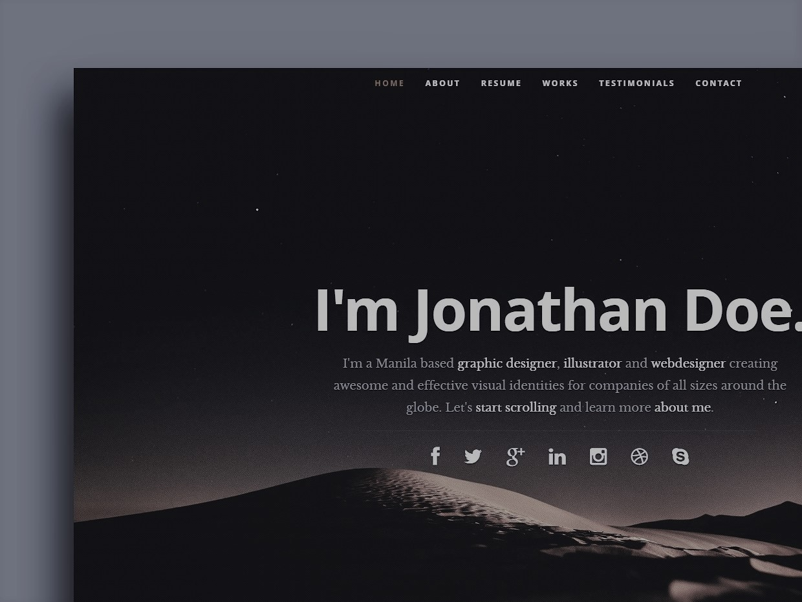

This is the website that help me alot in making my website home page look better. As I used this website for reference puropse,though there are various dissimilaites. I have date and time and fixed button in home page where as given website do not have. Similarly my home page do not have social media links.
